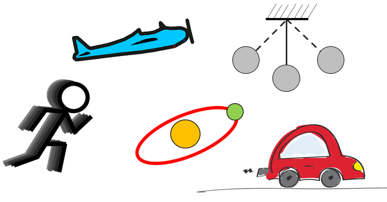

HOME BLOG EBOOKS ABOUT CONTACT SHOP
Motion is present everywhere around us. We observe motion of other humans, animals, vehicles, water in rivers and oceans, motion of air etc. Infact Motion is not restricted to material bodies alone, in some sense light, sound, em waves etc also moves.
In this section (Kinematics) we are interested purely in motion of bodies & not bothered about the causes behind it.
Mechanical motion can be defined as the change in position of a body with time, relative to other bodies. "Relative to other bodies" is a key point here, because motion can only be defined in relative terms. For instance, a man sitting inside a bus is at rest with respect to the bus, but he's under motion with respect to a person standing outside. So without a frame of reference, the idea of motion is meaningless. For analysis, the frame of reference of our choice is ground (earth), unless stated otherwise.

To study the motion of material bodies, it is convenient to assume the body to be made up of several points & the motion of these individual points define the nature of motion of the body as a whole.
If all points on the body moves with identical trajectories, then that type of motion is called Translatory motion. Another type of motion is the rotational motion. In this type of motion, all points on the body move in a circular trajectory with centres of these circles lying on a straight line.